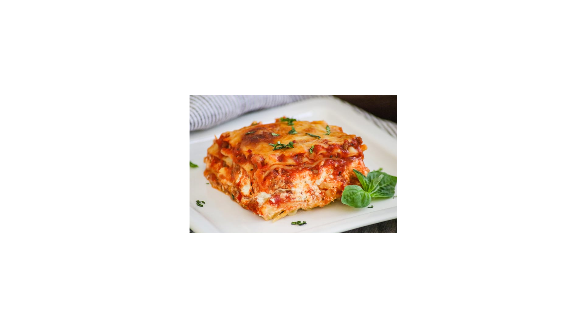

Lasagna

Fresh Baked Lasagna
This is a homemade lasagna that uses uncooked lasagna noodles.
It also uses ground venison mixed with ground beef and ground sausage
Ingredients
- 1 bell pepper, chopped
- 1 med. onion, yellow, chopped
- 4 cloves of garlic, crushed
- 2 Tbsp Olive oil
- 2 lbs. ground venison
- 1 lb. ground beef
- 1 lb. Jimmy Dean's sausage
- 2 26 oz cans of crushed tomatoes
- 1 16 oz can tomato sauce
- 1 4 oz can tomato paste
- 2 16 oz cans of water
- 2 Large eggs
- 24 oz Cottage cheese
- 2 lbs. Mozzarella cheese, shredded
- 8 ounces of Parmesan cheese, shredded
- Uncooked lasagna noodles
- Salt, pepper, italian seasoning, 2 Bay leaves
Steps
- Saute Bell pepper, onions and garlic in the olive oil
- Brown meats in oil and vegetables
- Add tomatoes, tomato sauce and paste and 2 cans of water
- Add seasonings and bring to boil
- Simmer for 45 minutes on low heat.
- Stir occasionally.
- In a large bowl combine the eggs, parmesan and cottage cheeses.
- Alternate layers of noodles, meat sauce, cheese mixture and Mozzarella
- Bake at 375 degrees for 30 minutes.
- Rest for 15 minutes.